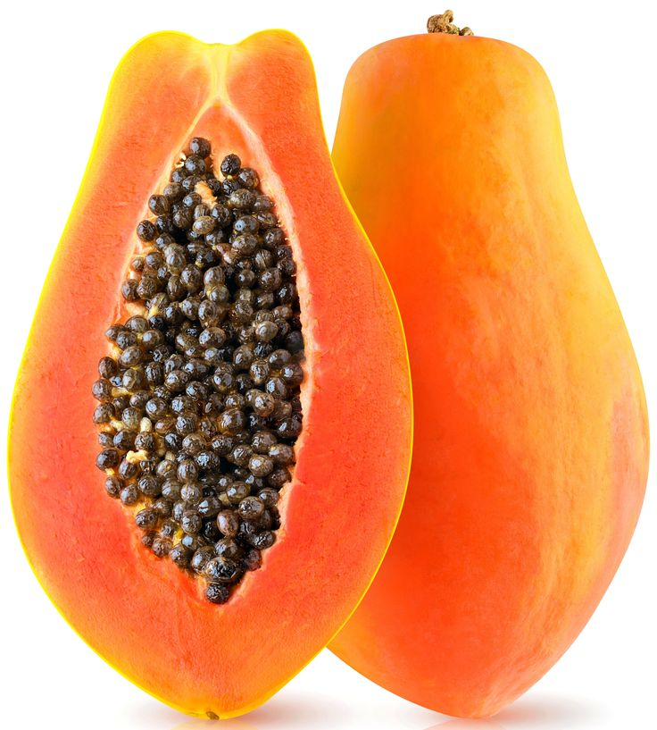
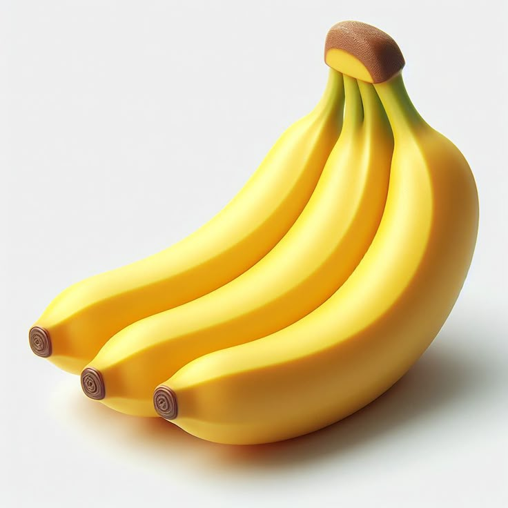
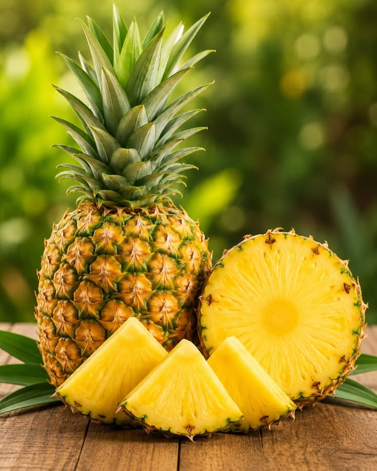

🍓 Fresh Fruit Recipes 🍍
Fruits can be enjoyed in many different ways. Here are three simple recipes you can try at home.
Home
Our Fruit
Fruit Facts
Fruit Recipes
Contact Us
🍎 Recipe 1: Fresh Fruit Salad

A fruit salad is a simple and colourful dish made by mixing different fruits together.
Ingredients
- 1 apple
- 1 banana
- 1 orange
- 1 cup of pineapple pieces
- 5 strawberries
Preparation Steps
- Wash the fruits.
- Peel the fruits that need peeling.
- Cut the fruits into small pieces.
- Put the fruits into a clean bowl.
- Mix the fruits together.
- Serve and enjoy your fruit salad.
🍌 Recipe 2: Banana Smoothie

A banana smoothie is a simple drink that can be prepared in a few minutes.
Ingredients
- 1 ripe banana
- 1 glass of milk
- 1 teaspoon of honey
- A few ice cubes
Preparation Steps
- Peel the banana.
- Cut the banana into small pieces.
- Put the banana into a blender.
- Add the milk and honey.
- Blend until smooth.
- Pour into a glass and enjoy.
🍍 Recipe 3: Fresh Pineapple Juice

Pineapple juice is a refreshing drink with a sweet and juicy flavour.
Ingredients
- 1 fresh pineapple
- 2 glasses of water
- 1 teaspoon of sugar
- A few ice cubes
Preparation Steps
- Wash and peel the pineapple.
- Cut the pineapple into small pieces.
- Put the pieces into a blender.
- Add water and blend.
- Strain the juice if necessary.
- Add sugar if desired.
- Serve chilled.
🍊 My Favourite Recipe
My favourite fruit recipe is __________ because __________.
©2026 Fruit World. All Rights Reserved.